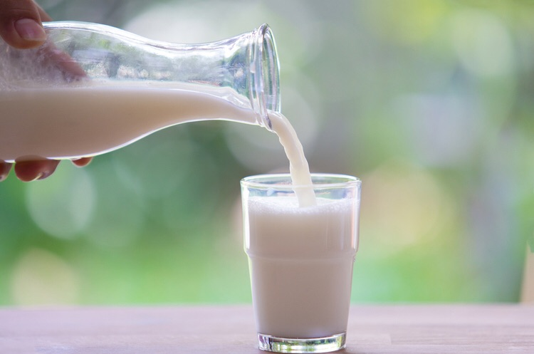
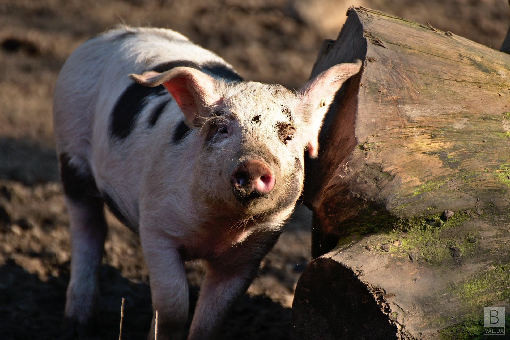
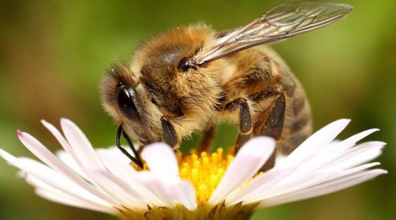

Рослинництво
Тваринництво
Агротехніка
Чому в Україні дорожчає молоко

В Україні молоко-сировина продовжує дорожчати під впливом її нестачі на внутрішньому ринку та активізації попиту з боку виробників свіжої молочної...
В Україні знизились закупівельні ціни на свинину живою вагою

Наприкінці вересня ціни на свиней забійних кондицій дещо знизились. Про це розповіли аналітики Асоціації “Свинарі України”. “Передостанні торги вересня завершилися...
Українські селекціонери вивели нову породу бджіл

У відділенні зоотехнії ННЦ “Інститут бджільництва імені П.І. Прокоповича” завершено створення і затверджено нове селекційне досягнення у тваринництві — внутрішньопородний...